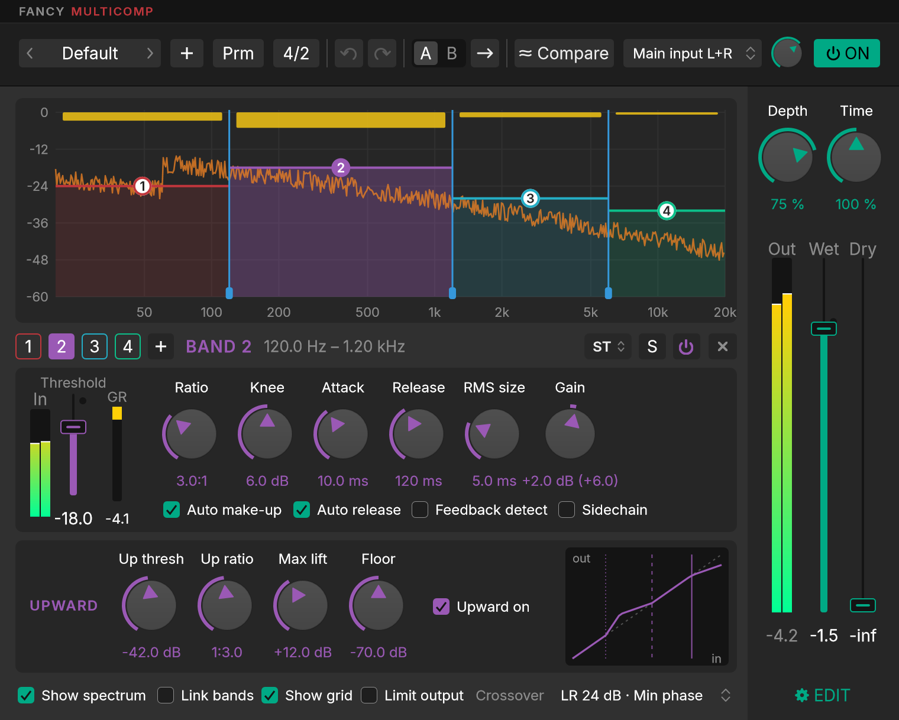
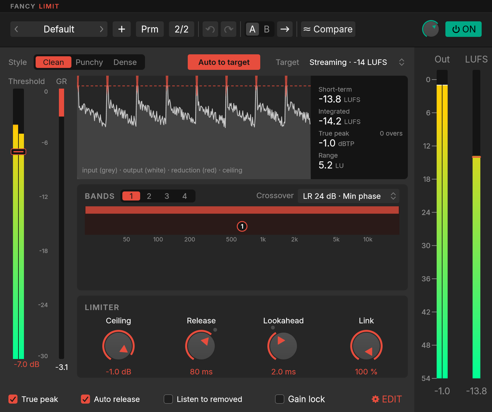

Fancy Comp
Compressor
For evening out a vocal, a bass or a drum bus, and for anything that needs a sidechain.
- Set the threshold right on the input meter
- Compress from a sidechain or a filtered detector
- Lift quiet passages with upward compression
Plugins that react to level: they turn things down, or up, when the sound gets louder or quieter.
Compressor
For evening out a vocal, a bass or a drum bus, and for anything that needs a sidechain.

Multiband compressor
For a bus or a full mix where only part of the spectrum needs control.

Gate, ducker and trigger
For drum mics and noisy tracks, and for ducking one track under another.

True-peak limiter
For the end of a mix or a master.

De-esser
For harsh “s”, “sh” and “t” sounds in a voice, or harsh highs on cymbals.

One-knob de-esser
For de-essing a vocal in a few seconds.
| I want to | Use | Because |
|---|---|---|
| Even out a vocal, bass or drum bus | Fancy Comp | One compressor over the whole signal, with every control on one page. |
| Control only the lows or highs of a bus | Fancy MultiComp | Each band has its own compressor, and untouched bands pass through flat. |
| Silence a drum mic between hits | Fancy Gate | It opens on the hit and closes after it, with a filter on what it listens to. |
| Stop peaks at the end of a master | Fancy Limit | A brickwall ceiling measured in true peak. |
| Soften “s” sounds, with full control | Fancy DS | Threshold, frequency, range and two ways of cutting. |
| Soften “s” sounds, quickly | Fancy DS-Mini | One Amount knob on the same engine. |
All fourteen plugins in one zip, free to download and use. VST3 for Windows 10 and 11 (x64). On a Mac: VST3 and Audio Unit for macOS 11 or later, Intel and Apple silicon, as a beta. The installer copies them to your own folders and needs no administrator password.